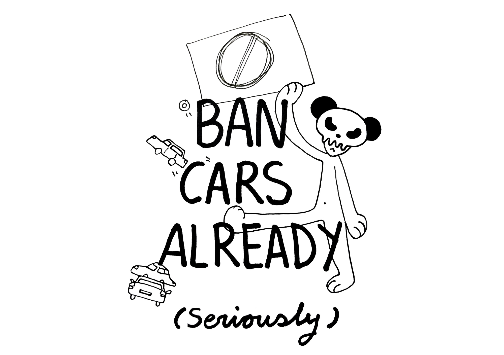

02 — Give the streets back to the people
Ban cars already
A reflection of how I went too deep in the rabbit hole. It all started after reading Cities for People, I was not able to stop thinking about it. Reading and learning that our cities are choices that follow a political agenda. Daydreaming about alternative futures where cities are made for us. Had to pour it out, the result? Doodling on behalf of better cities for all of us where we Ban Cars Already! (the fanzine)
— Read the zine —

1 / 10
— References and inspiration —
Let's Ban Cars! (Seriously). BritMonkey, 2020 Youtube rant Curbing Traffic. Melissa & Chris Bruntlett, 2021 Urban planning book Traffic Accidents. German Federal Statistical Office, 2023 Statistical report Road Death Statistics in the EU. European Parliament, 2025 Statistical report Global Status Report on Road Safety. World Health Organization, 2023 Statistical report Parking Day. Rebar Art and Design Studio, since 2005 Guerrilla art project Costs Related to Serious Road Injuries. European Commission, 2020 Academic study r/fuckcars. Reddit Community Subreddit End-of-Life Vehicle Statistics. Eurostat, 2024 Statistical report Les Voitures Pelouse. Benedetto Bufalino, 2021 Art installation— Making of —
— Want a copy? Reach out! —